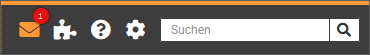
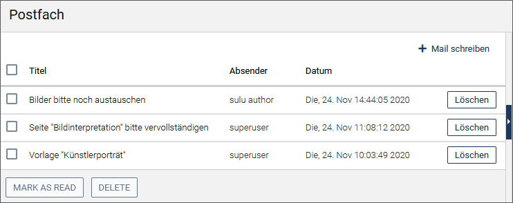
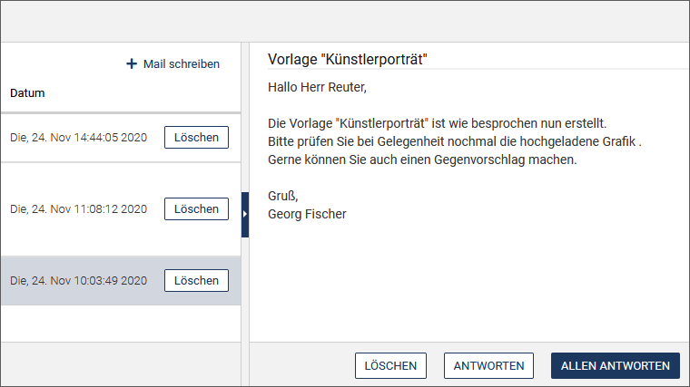
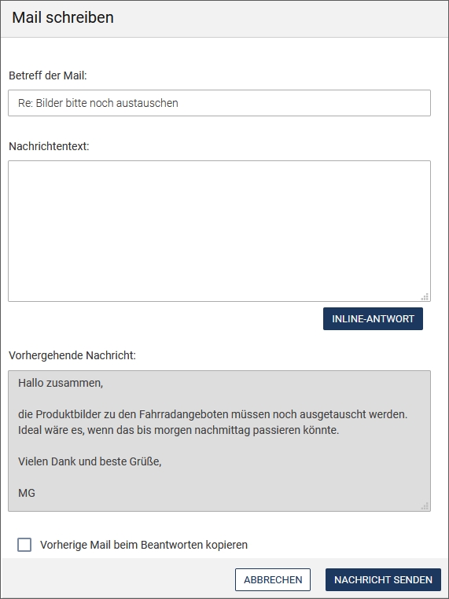
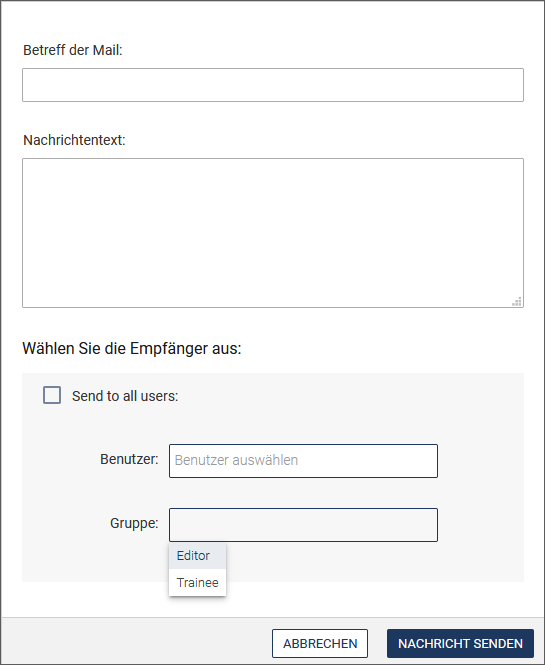
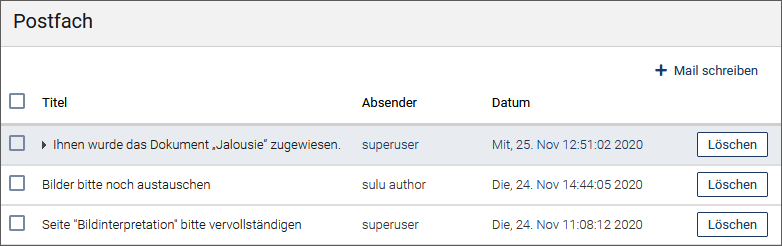
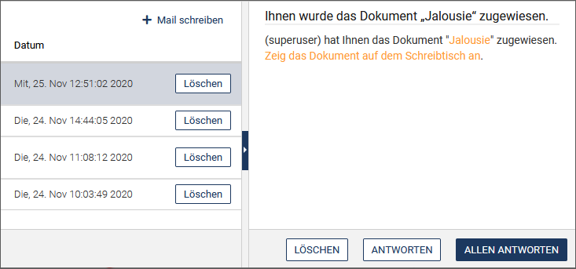
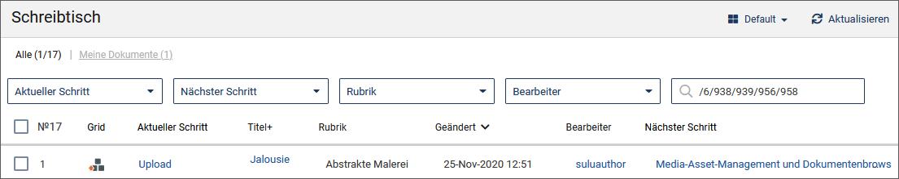

E-Mails senden und empfangen
imperia verfügt über zwei Möglichkeiten, Mails an interne oder externe Empfänger zu versenden.
Interne Mails empfangen und versenden#
Auf das imperia-interne Mailsystem können Sie bequem über das Symbol in der Kopfzeile zugreifen. Hier wird auch die Anzahl der ungelesenen Nachrichten eingeblendet.

Mit Hilfe des internen Mailsystems können Sie Mails an andere imperia-Benutzer innerhalb Ihres Systems verschicken und Mails von anderen imperia-Benutzern empfangen.
Hinweis
Es handelt sich hierbei um keinen E-Mail-Client, mit dem Sie Mails an externe Adressen (adressat@domain.com) versenden können oder externe Mail abrufen können.
Mail lesen#
- Rufen Sie Ihre Mails über über das Symbol in der Kopfzeile auf.
- Auch über Benutzerkonto -> Nachrichten haben Sie Zugriff auf Ihre Mails.
Das Postfach zeigt alle Mails in Tabellenform. Zu jeder Mail werden Betreff, Absender und Datum angezeigt.
Ungelesene Mails haben vorne ein Pfeilsymbol.

- Klicken Sie auf eine Mail im Eingangsbereich links.
Der Inhalt der Mail wird nun im rechten Bereich angezeigt.

Gelesene Mails sichbar machen#
- Wenn Sie sichtbar machen möchten, dass Sie eine oder mehrere Mails bereits gelesen haben, aktivieren Sie die Checkboxen vor den betreffenden Mails und wählen Sie die Option Als gelesen markieren. Die Liste wird aktualisiert und bei den bereits gelesenen Mails verschwindet das Pfeil-Symbol vor dem Titel.
Mail beantworten#
- Sie können direkt auf eine Mail antworten, indem Sie unter dem Mail-Inhalt auf Antworten klicken. Wählen Sie Allen antworten, wenn Sie Ihre Antwort an alle Empfänger der Mail schicken möchten.

- Wenn Sie die vorhergehende Nachricht in Ihren Antworttext integrieren möchten, um beispielsweise direkt auf einzelne Passagen zu reagieren, klicken Sie auf Inline-Antwort neben dem Eingabefeld für die Nachricht.
- Geben Sie Ihren Nachrichtentext ein.
- Legen Sie fest, ob die vorhergehende Nachricht für die Antwort mit kopiert werden soll.
- Klicken Sie auf Nachricht senden.
Neue Mail schreiben#
-
Klicken Sie in Ihrer Mailbox auf Mail schreiben über der Liste der eingegangenen Mails.

-
Tragen Sie den Betreff und den Text der Nachricht ein.

-
Wählen Sie die Empfänger aus:
- Aktivieren Sie die Checkbox An alle Benutzer versenden, wenn die Mail alle Benutzer außer Sie selbst erreichen soll.
- Suchen Sie gegebenenfalls die Empfänger aus der Liste aller Benutzer in der Drop-Down-Box Benutzer aus. Wählen Sie die Benutzer einzeln aus oder schreiben Sie die gewünschten Namen direkt in das Textfeld.
- Alternativ können Sie die Benutzer über ihre Gruppenzugehörigkeit benachrichtigen. Schreiben Sie den Gruppennamen in das Textfeld oder wählen Sie die gewünschte Gruppe aus der Drop-down-Box Gruppe aus.
-
Versenden Sie die Nachricht über den Button Nachricht senden.
Die Mail wird direkt versendet. Es erscheint eine kurze Bestätigungsmeldung.
Mail löschen#
- Um eine E-Mail zu löschen, klicken Sie in der Mailbox am Ende der Zeile einer Nachricht auf Löschen.
- Möchten Sie mehrere Mails aus dem Eingangsbereich löschen, aktivieren Sie die Checkboxen vor den gewünschten Mails und führen Sie anschießend Löschen unter der Liste aus.
Benachrichtigung "Dokument zugewiesen"#
Sobald Ihnen ein Dokument zugewiesen wurde, werden Sie auch über das interne Mailsystem benachrichtigt:

- Öffnen Sie die Mail, indem Sie sie anklicken.

In der Nachricht ist ein Link auf die Vorschau des Dokuments enthalten. Zusätzlich enthält die Nachricht einen Link auf den Schreibtisch.
- Klicken Sie auf den Link Zeig das Dokument auf dem Schreibtisch an.
Der Schreibtisch wird geöffnet. Auf ihm wird nur das Dokument angezeigt, das Ihnen zugewiesen wurde:

Externe Mails versenden#
Sie können aus dem Workflow heraus eine E-Mail versenden. Diese kann sowohl an interne als auch an externe Empfänger gehen. Dafür gibt es das interaktive Plug-in Mailversand. Mit diesem Workflow-Plugin können Sie bei bestimmten Ereignissen im Workflow automatisierte E-Mails versenden.
Dieses Mailversand-Plugin ist auch Grundlage für das Weiterleiten von internen Nachrichten an Ihre eigene private, externe E-Mail-Adresse. Diese Funktion ist im Look and Feel zu finden.